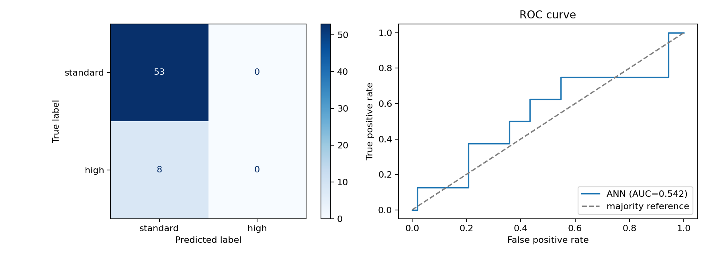

Test accuracy
86.9%61 held-out rowsModel evaluation / 01
Transmission,
classified.
RUN COMPLETE · 03 SEP 2026
A feed-forward artificial neural network trained on the compact Car Dekho dataset to identify automatic transmissions.
ROC-AUC
0.542near random separationDataset
301total car recordsBaseline
86.9%majority-class accuracy01 / Label balance
What the model saw
n = 301Manual261 · 86.7%
Automatic40 · 13.3%
Read the accuracy carefully.
The ANN matches the majority baseline, but it missed all 8 Automatic cars in the test set. The class imbalance is the central limitation of this run.
The ANN matches the majority baseline, but it missed all 8 Automatic cars in the test set. The class imbalance is the central limitation of this run.
02 / Error profile
Confusion matrix
test set · n = 61PRED. MANUAL
PRED. AUTO
ACTUAL
MANUAL
MANUAL
53
0
ACTUAL
AUTO
AUTO
8
0
Manual recall100%
Automatic recall0%
Hidden layers32 → 16 neurons
ActivationReLU / Adam
03 / Evaluation plot
ROC curve
AUC 0.542
04 / Run manifest
Training setup
Sourcecar data.csv
Split80 / 20 stratified
Inputs7 cleaned features
PreprocessingScaled + one-hot encoded
TargetTransmission = Automatic
Random state42